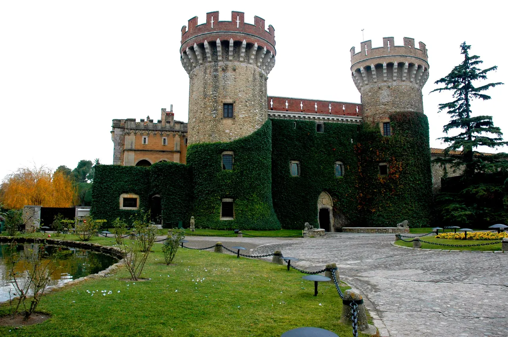

{kind=link}

Calella de Palafrugell
흰색 회반죽 가옥과 아치 회랑(Les Voltes), 쪽빛 바위 만(Cove)을 잇는 카미 데 론다 해안 산책로가 있는 코스타 브라바의 원형 어촌.

엠포르다 북부의 역사 마을로, 14세기 페랄라다 백작들의 웅장한 페랄라다 성(Castell de Peralada)과 카르멜회 수도원이 중심을 이룬다.
현재 성의 일부는 카지노 및 국제 음악 페스티벌 공연장으로 사용되며, 성 내부의 카르멜회 수도원 박물관에는 10만 병이 넘는 와인 소장품과 8만 권의 고서적을 소장한 유서 깊은 도서관이 자리 잡고 있다.
엠포르다 와인 문화와 성채 건축에 특별한 관심이 있는 여행자를 위한 선택지다. 전체 일정상 필수 경로는 아니며, 콜리우르나 피게레스 이동 중 시간적 여유가 있을 때 들르기 좋다.
| 운영시간 | 9/1~6/30 정시 가이드 투어 10:00·11:00·12:00·15:30·16:30·17:30 (7~8월 10:00·11:00·12:00·16:00·17:00·18:00·19:00). 투어 5분 전 Porta del Carme 집합 |
|---|---|
| 휴무 | 성 박물관은 일요일·월요일 휴관, 공휴일 오후 휴관 |
| 예약 | 10인 초과 단체는 사전 예약 필수(infomuseo@grupperalada.com). 개인은 가이드 투어 시각에 맞춰 방문. 입장 11유로/할인 7유로, 성+정원 통합 18유로 |
| 메모 | Jason 확정 — 일정에서 제외 (박물관 투어 예약 안 함) |
| 항목 | 상세 정보 |
|---|---|
| 위치 | Carrer Sant Joan, s/n, 17491 Peralada, Girona |
| 운영 시간 | 화–일 10:00–14:00, 16:30–19:30 (월요일 휴관) |
| 입장 요금 | 박물관 가이드 투어 약 €8.00~10.00 |
| 공식 정보원 | https://museucastellperalada.com |
📌 일정 팁: 본 여행 일정에서는 선택/대체 옵션으로 분류되어 있습니다.
14세기 고딕 양식의 회랑과 목조 천장이 잘 보존되어 있으며, 스페인에서 가장 방대한 16~18세기 유리 공예 컬렉션과 돈키호테 초판본 등을 소장한 도서관이 인상적이다.
흰색 회반죽 가옥과 아치 회랑(Les Voltes), 쪽빛 바위 만(Cove)을 잇는 카미 데 론다 해안 산책로가 있는 코스타 브라바의 원형 어촌.

앙리 마티스와 앙드레 드랭이 야수파(Fauvism)를 탄생시킨 지중해 항구마을이자 마요르카 왕국의 해상 왕궁.

세계 최대 폭(23m)의 기둥 없는 단일 고딕 신랑과 11세기 창조의 태피스트리를 품은 카탈루냐 고딕의 걸작.

기원전 1세기 로마 성벽부터 14세기 카롤링거·중세 성벽을 따라 걸으며 구시가지 붉은 지붕과 피레네산맥을 360도로 조망하는 공중 산책로.

구시가지와 신시가지를 가르는 오냐르 강변의 파스텔톤 채색 가옥들과 구스타브 에펠의 붉은 철교.

엠포르다 평야가 내려다보이는 언덕 위에 완벽하게 복원된 카탈루냐 고딕 석조 요새 마을.